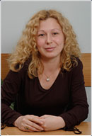

PENKA NACHKOVA graduated with a Master’s degree in Law from Sofia University in 1993, completed her traineeship at the Sofia District Court in 1994 and then worked as an associate in a law firm in Sofia. Penka has been a member of the Sofia Bar Association since 1995 and has participated in various international and national legal seminars, trainings and conferences. A lawyer with a wide experience, she is a recognized specialist in the representation of local and foreign persons and entities in administrative, civil and commercial litigation and arbitration proceedings. She is experienced in real estate transactions, land restitution, conventional lien, foreign investments, commercial and company law, international law, pre-court settlement of disputes.

SYLVIA SYLVIONOVA IVANOVA was born on 7 June 1979. She has held a Master’s degree in law from the New Bulgarian University in Sofia since 2004. Before joining Law Office Nachkova, she worked as a legal adviser for a leading security company in Sofia. Sylvia has been a member of the Sofia Bar Association since 2007 and holds Certificate ¹ VOQ N14 / 27.04.2006 in Quality Management Systems in conformity with BDS EN ISO 9001:2001 and Internal Auditor in accordance to BDS EN ISO 19011:2004 from the Union of Quality Experts in Bulgaria. She possesses Certificate ¹ 06/0277/21.09.2006 for Internal Quality Auditor with LRQA according to BDS EN ISO 9001:2001. After successfully completing a training course with LRQA she became a Quality Systems Manager. Sylvia Ivanova is also experienced in civil and administrative law and process.